Click anywhere(except UI) to start main simulation. If you want to get out of simulation and use interfaces, press key Esc or Q.
You can move by key W, A, S, D, Space, Shift, which are front, left, back, right, up, and down. You can place the block by right click and delete the block by left click. (You'll be familiar with these key settings if you have played Minecraft before)
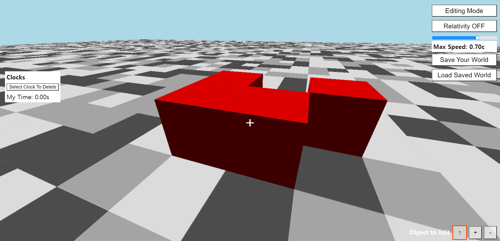You can place the clock and name it by scroll click(You should use mouse).
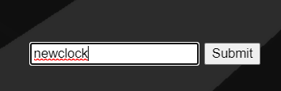 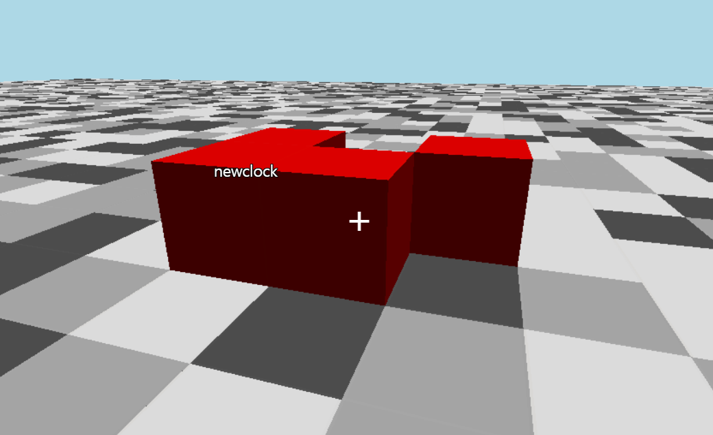You can delete the clock by the button 'Select Clock to Delete'. Pick clocks that you want to delete, and then click 'Delete Selected Clocks' button.
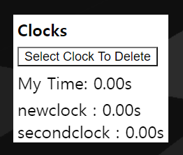 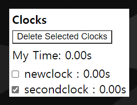You can select the color of the block to place by topleft UI. It is initially set red.
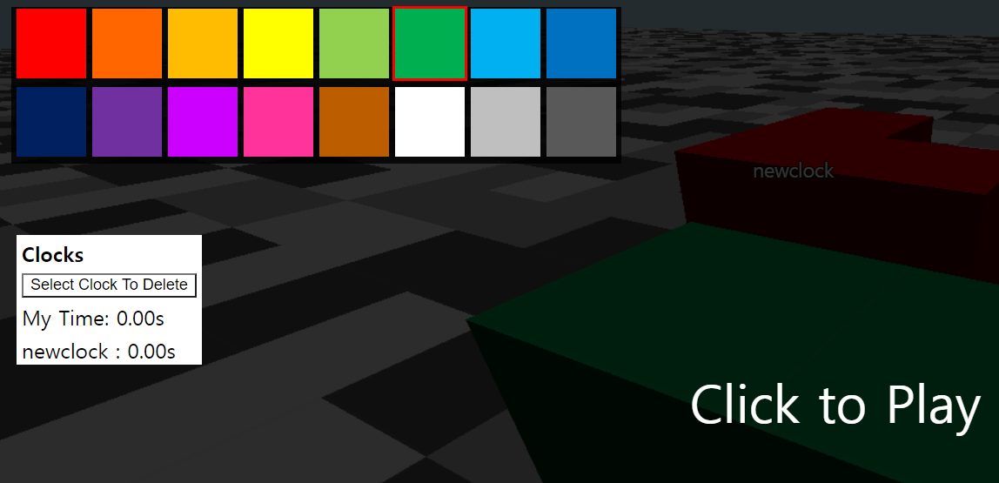In this simulator, you can handle multiple moving objects. You can add new object('+' button) or delete('-' button) the current object on the bottomright UI.
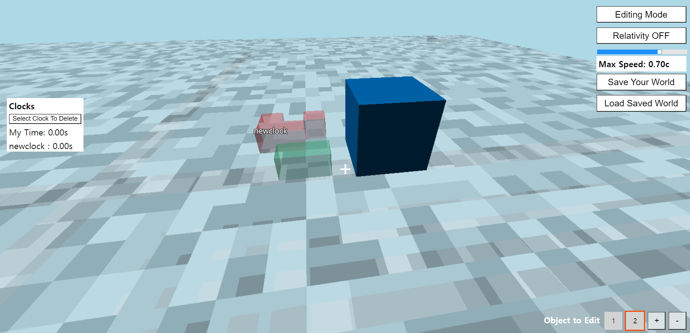Each object can move with different velocity, and you can set the velocity of current object on the bottomright UI. Write a number from -1 to 1 at textbox labeled 'vx', 'vy', 'vz', and click 'Set Object Velocity' button. Note that the speed of the object (sqrt(vx*vx + vy*vy + vz*vz)) should be less than light speed.
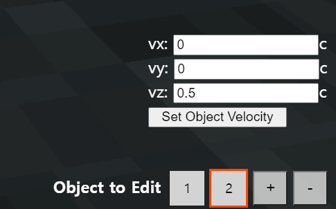You can edit only currently focused object. If you want to change other objects, you can select object by clicking number buttons at the bottomright UI.
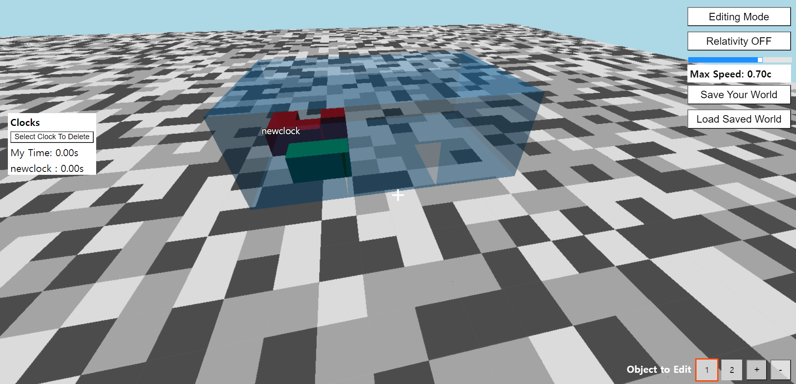Topright UI is the most important. You can change your speed and edit/view, and adopted relativity model.
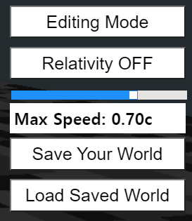You can change your speed by a slide bar at topright UI, or key Z and X, which are slow down & speed up. Your speed is expressed by the speed of light, c. It is intially set 0.70c.
You can change your mode, Editing Mode & Viewing Mode by key E or clicking the button. At Editing Mode, you can place or delete block or place clock on current object. Objects will not move and clocks will show the time 0.00s. At Viewing Mode, you cannot edit the world. You can view the relativistic world moving around, and study how the time of clocks pass by.
You can change relativity model by key R or clicking the button. There are three types available, Relativity OFF, Weak Relativity, and Strong Relativity. In Weak Relativity, only length contraction is implemented, and the effect of time of light travel is not included. This is usually taught visual effect of special relativity. In Strong Relativity, the effect of time of light travel is also included, so this is more realistic view of relativistic world. Except for general relativitistic effects.
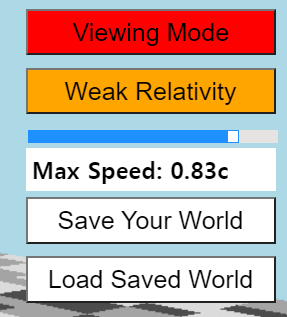With Save and Load buttons, you can save the world on your PC and load saved world later. Saved file is in txt format. You can share the file with your friends or classmates.
Enjoy constructing awesome shapes, study weird behaviors of relativistic objects and clocks, and share your interesting discoveries!
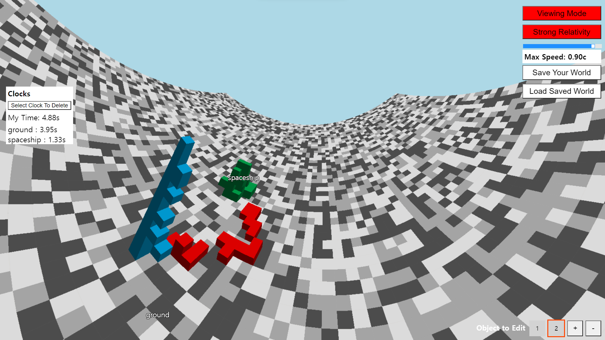시뮬레이션을 시작하려면, UI들을 제외한 아무 곳이나 클릭하세요. 시뮬레이션에서 벗어나 원래 있던 인터페이스들을 사용하고 싶다면, Esc나 Q 키를 누르시면 됩니다.
움직이는 것은 W, A, S, D, Space, Shift 키로 할 수 있고, 각각 앞, 왼쪽, 뒤, 오른쪽, 위, 아래로 이동하는 키입니다. 블록은 마우스 우클릭으로 설치할 수 있고, 마우스 좌클릭으로 파괴할 수 있습니다.(이러한 키 세팅은 마인크래프트를 플레이해 보신 분이라면 익숙하실 것입니다)
마우스 가운데 클릭(스크롤 버튼 클릭)으로 시계를 설치하고 그 이름을 붙일 수 있습니다.
설치한 시계를 삭제할 때는 'Select Clock to Delete'라는 버튼을 이용하면 됩니다. 삭제하고자 하는 시계들을 선택하고, 'Delete Select Clocks' 버튼을 누르십시오.
왼쪽 위에 있는 UI를 통해서 설치하는 블록의 색을 변경할 수 있습니다. 처음에는 빨간색으로 설정되어 있습니다.
본 시뮬레이션은 여러 개의 움직이는 물체를 조작할 수 있습니다. 오른쪽 아래에 있는 UI에서, '+' 버튼으로 새로운 물체를 추가하시고 '-' 버튼으로 현재 선택되어 있는 물체를 삭제할 수 있습니다.
각각의 물체는 서로 다른 속도로 움직일 수 있고, 오른쪽 아래 UI에서 현재 물체의 속도를 임의로 설정할 수 있습니다. 'vx', 'vy', 'vz'라고 표시되어 있는 텍스트박스에 -1 부터 1까지 아무 실수를 적으신 후, 'Set Object Velocity' 버튼을 누르시면 적으신 속도가 현재 물체에 적용됩니다. 물체의 속력(sqrt(vx*vx + vy*vy + vz*vz))은 광속보다는 작아야 한다는 점에 유의하십시오.
당신은 오직 지금 선택되어 있는 물체만 편집할 수 있습니다. 다른 물체를 조작하고 싶다면(블록이나 시계 설치, 속도 조절 등), 오른쪽 아래 UI에서 숫자 버튼들을 눌러 다른 물체를 선택할 수 있습니다.
오른쪽 위에 있는 UI가 가장 중요합니다. 이곳에서 당신의 이동 속도를 바꿀 수 있고, Edit/View를 전환할 수 있으며, 적용되는 상대성이론 모델을 선택할 수 있습니다.
이동 속도를 조절하고 싶다면, 오른쪽 위 UI의 슬라이드 바를 이용하거나, Z와 X 키를 이용하면 됩니다. Z 키로는 속도를 낮추고, X 키로는 속도를 올릴 수 있습니다. 당신의 속도는 빛의 속도 c를 사용하여 표현되며, 처음에는 0.70c로 설정되어 있습니다.
모드를 바꿀 수도 있습니다. Editing Mode와 Viewing Mode 두 모드 사이에서, key E를 누르거나 버튼을 클릭하시면 모드를 전환할 수 있습니다. Editing Mode에서는 현재 물체에 블록을 설치/삭제하거나, 시계를 설치할 수 있습니다. 물체들은 정지한 상태로 유지될 것이며 시계들은 0.00s에 고정되어 있을 것입니다. Viewing Mode에서는 월드를 편집할 수는 없습니다. 상하좌우로 움직이면서 상대론적인 세계를 관찰할 수 있고, 시간이 어떻게 흘러가는지 연구할 수 있습니다.
상대성 이론 모델을 바꿀 때는 R 키를 누르거나 버튼을 클릭하면 됩니다. 상대성 이론 모델에는 총 3가지가 있는데, 각각 Relativity OFF, Weak Relativity, Strong Relativity입니다. Weak Relativity(약한 상대성)에서는 길이 수축만 구현되어 있으며, 빛이 이동하는 데 걸리는 시간은 고려되어 있지 않습니다. 이 모델이 일반적으로 알려진 특수 상대성이론의 시각적 효과입니다. 하지만 실제와는 약간의 거리가 있습니다. Strong Relativity(강한 상대성)에서는 빛이 이동하는 데 걸리는 시간에 의한 효과까지 포함되어 있으며, 따라서 이는 더 현실에 가까운 상대론적 세상의 모습을 보여줍니다. 일반 상대론적인 효과를 제외하고 말이죠.
Save와 Load 버튼으로는 지금 만든 월드를 여러분의 PC에 저장하고 나중에 다시 불러올 수 있습니다. 파일은 txt 형식으로 저장되며, 사람들과 파일을 공유할 수도 있습니다.
신기한 모양들을 만들고, 물체와 시계의 상대론적인 행동을 연구하고, 흥미로운 발견들을 사람들과 공유해보세요!